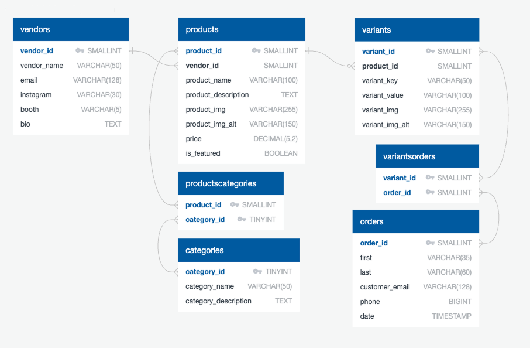

Wild Rose Foundry
Overview
Wild Rose Foundry is a fictional local Alberta artisan collective that brings together independent makers in a community-driven marketplace. As part of a digital initiative, the goal of this project was to design and develop a full-stack prototype that allows users to browse products across vendors and place orders for pickup during market weekends.

The Challenge
The challenge was to create a simple, structured digital platform that allowed users to browse across vendors and place orders, while still reflecting the brand's handcrafted, local identity. From a development standpoint, this meant designing a database that could support multiple vendors, products, and variations, while also building a dynamic website that could present that data in a simple and intuitive way.
The Process
Designing the Database
I started by designing a relational database to support vendors, products, categories, variants, and orders. Creating an ERD early helped define relationships and avoid redundancy, especially when handling product variants and cross-vendor categories.

Building the Website
With the database in place, I built the website using PHP, HTML, and CSS, focusing on making it feel dynamic while keeping the code clean and maintainable. Product listings, categories, and individual pages are generated through database queries, allowing templates to be reused across the site.
I used PHP includes for reusable components to maintain consistency, with session-based logic handling product orders. Alongside development, I spent time simplifying layouts, spacing, and hierarchy because making something feel clean and easy to use often takes more effort than adding more features.
Enhancing the User Experience
To improve engagement and interactivity, I implemented a few key JavaScript features.
-
Featured Product Carousel
The featured product carousel is dynamically populated using a MySQL query, with scrollability handled through CSS, and button-based navigation to change the carousel position with JavaScript.
-
Christmas Countdown Banner
The Christmas countdown banner uses the Temporal API to count down to Christmas Day, updating automatically at midnight based on the user’s local time.
JSconst daysUntilChristmas = () => { const today = Temporal.Now.plainDateISO(); const christmas = new Temporal.PlainDate(today.year, 12, 25); // Calculate Days Until Christmas const christmasPast = today.until(christmas, { largestUnit: 'days' }); // If Christmas already passed this year (Calculation provided negative days), then add 1 year if (christmasPast.days < 0 ) { const christmasFuture = new Temporal.PlainDate(today.year + 1, christmas.month, christmas.day); var christmasCountdown = today.until(christmasFuture, { largestUnit: 'days' }); } else { var christmasCountdown = christmasPast; } // Update # in HTML christmasBanner.textContent = `Only ${christmasCountdown.days} days until Christmas! ❄️`; }
-
Product Variation Thumbnails
Product variant thumbnails allow users to toggle between variations while dynamically updating product images through thumbnail selection.
The Solution
The final result is a dynamic prototype that balances a structured database with a clean front-end experience. Users can browse products across vendors, view detailed product pages, and build an order for pickup, all within a system designed to scale as the website grows.
- 100% Built from scratch
- 7 Relational tables
- ✓ Fully responsive